Огляд Visuo XS816: гідно за свою ціну
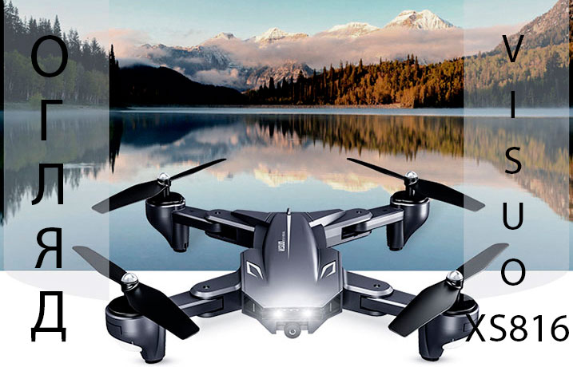
В сьогоднішньому огляді мова піде про популярну модель складаного дрона з бюджетної категорії. Модель Visuo
XS816 відрізняється компактністю і невеликою вагою. У складеному вигляді дрон може вміститися на долоні.
Серед
клієнтів нашого магазину квадрік швидко знайшов популярність і став "топом продажів". Давайте розберемося
чому
так сталося.
Що в коробці? Огляд комплекту Visuo XS816
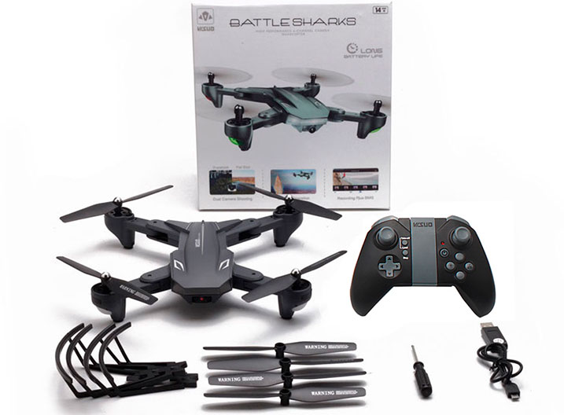
Нічого незвичайного в коробці точно не знайдете, комплект досить стандартний для сучасних квадрокоптерів.
Крім
самого безпілотника виробник в комплектації передбачає простий, але досить ергономічний пульт, ємний
літієвий
акумулятор, запасні комплекти лопатей і захисту для них, а також інструкцію англійською мовою, кабель для
підзарядки і викрутку.
В інструкції досить докладно, з ілюстраціями, описані всі процеси налаштування і підключення, розписані
значення кнопок і стіків пульта.
Якщо ви новачок в пілотуванні подібної техніки - обов'язково скористайтеся захистом лопатей, так як така
маленька і легка деталь зможе захистити пропелер від пошкодження під час аварії.
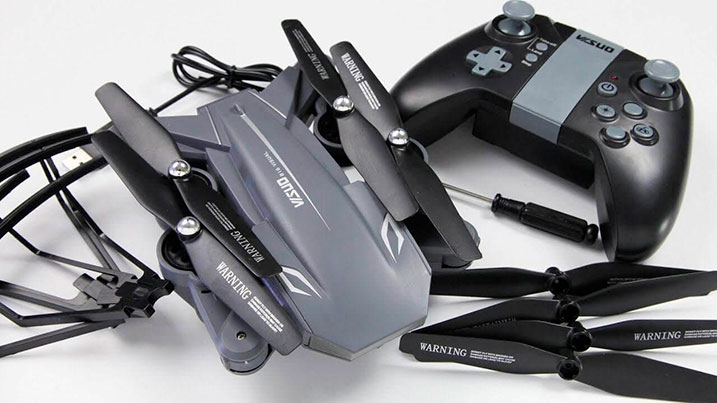
В асортименті кілька варіантів комплектації, що відрізняються між собою кількістю запасних батарей і
наявністю
захисного кейса.
Побіжний погляд на зовнішній вигляд
Вся лінійка XS дронів Visuo зовні досить схожі, точніше конструктивно виконані за однією схемою. Відмінність
полягає в габаритах і фронтальної частини. Сама модель XS816 оснащена спереду яскравим підсвічуванням, нижче
якого розташовується основна камера. Промені складаються досить просто, при цьому не ховаються під корпус як
це реалізовано у складаних дронів DJI.
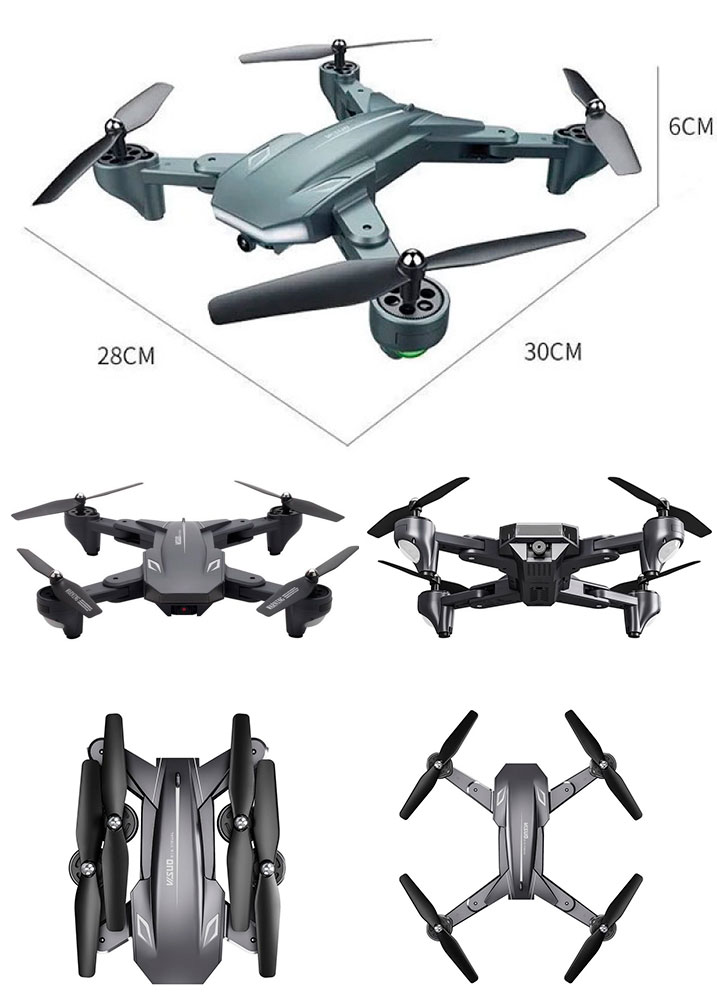
Ззаду встановлюється літієвий акумулятор, ніякі дроти конектити не потрібно, достатньо просто до клацання
вставити батарею. На нижній частині корпусу розташована додаткова камера і кнопка включення.
Пластик, з якого виконані основні компоненти корпусу безпілотника дуже легкий, при цьому досить міцний і
надійний. Навіть при падіннях з висоти вдавалося зберегти цілісність дрона.
Перший запуск
Якщо вам все ж лінь заглянути в інструкцію ми розповімо як законектити дрон з пультом і зробити перший
запуск.
-
Включити сам коптер.
-
Включити пульт.
-
Лівий стик пульта переведіть в положення вгору, потім вниз.
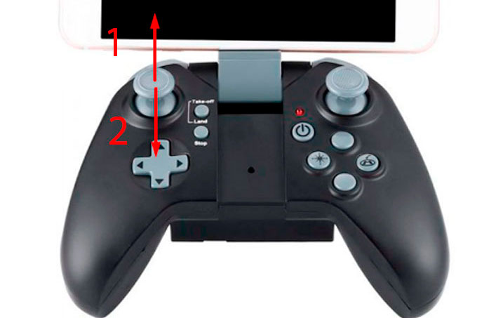
Відбудеться синхронізація квадрокоптера з пультом. Миготливі вогники на квадріку повинні загорітися
постійним
світінням. Або можна перевірити успішність підключення натиснувши на пульті кнопку STOP. У разі успішного
з'єднання запустяться мотори дрона. Зупинити їх обертання можна цією ж кнопкою.
Калібрувати перед польотом безпілотник не потрібно, так як в моделі відсутня GPS. Але можна уточнити його
положення, одночасно затиснувши стіки по діагоналі вниз в різні боки.
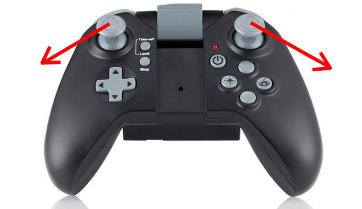
Якщо в процесі польоту ви побачите що дрон завалюється в одну зі сторін можна відразу це виправити
калібрувальними кнопками на пульті. Необхідно пару раз натиснути кнопку протилежну стороні заносу.
Наприклад,
якщо коптер завалюється вліво досить пару раз натиснути вправо.
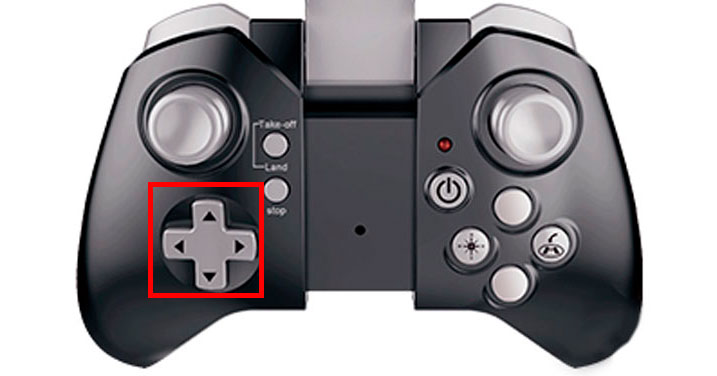
Пройдемося по можливостям бюджетника
Найзручніша і корисна функція, на наш погляд, це автоматичний зліт натисненням однієї кнопки на пульті
управління Take-off. Одним натисканням можна відразу запустити дрон в політ.
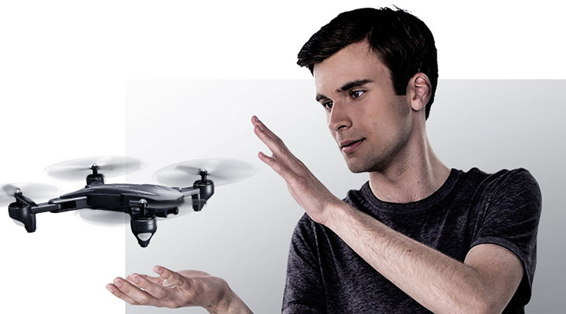
Не менш корисна функція утримання висоти, яка реалізована за рахунок вбудованого барометра. Скористатися
функцією можна при зйомці, так фото або відео вийдуть набагато чіткими.
Фліп - ще одна опція, без якої важко уявити навіть найдешевший квадрік. Натисніть на пульті відповідну
кнопку,
розташовану на торці праворуч і вкажіть правим джойстиком напрямок перекиду.
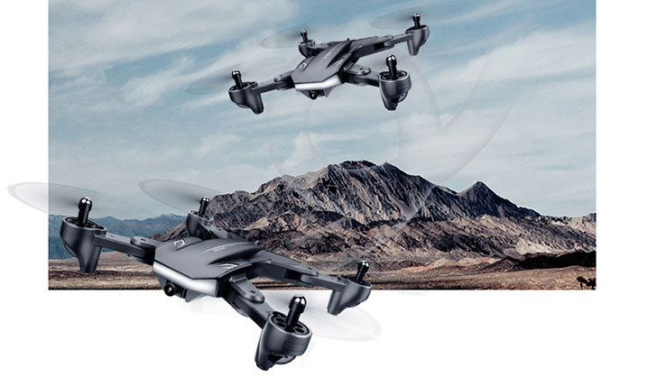
Зліва на торці пульта розташована кнопка, яка відповідає за швидкісний режим польоту. Передбачено три
варіанти, перемикання просте - один раз натиснути на кнопку. Кількість звукових сигналів скаже вам про
вибраний режим, наприклад три коротких звуки говорить нам що активований третій режим швидкості, два -
другий
і один - перший.
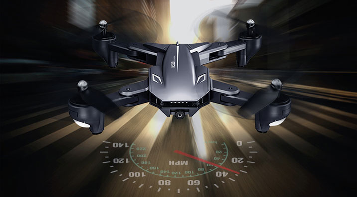
Нижня камера має невелику роздільну здатність, вона використовується для позиціонування, точніше щоб ви
могли
переключившись на вигляд з цієї камери подивитися що знаходиться під дроном. Зручно якщо квадрік полетів на
пристойну відстань і вам складно оцінити як високо дрон над об'єктом.
Ще одна цікава особливість, яку зустрінеш навіть не у всіх більш дорогих моделях - автовідключення моторів
при
примусовому перевороті. Про що мова: якщо ви зловите квадрік на долоню і переверне його догори ногами,
автоматично відключаться мотори. Іноді такий варіант відключення максимально зручний.
Ще можна частково пульт замінити жестами, склавши пальці символом "V" і потрапивши в об'єктив камери можна
зробити знімок. Якщо показати дрону відкриту долоню - почнеться запис відео. Але для зупинки зйомки все ж
доведеться скористатися пультом.
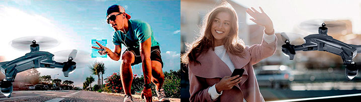
Основна камера: 4K чи ні?
Часто задається питання щодо цієї моделі: як знімає камера? Відповідь - добре. Виходячи з вартості
квадрокоптера великих вимог до камери висувати не варто. На виході якість фото цілком собі пристойна,
особливо
якщо зафіксувати дрон. При зйомці відео в безвітряну погоду ролики виходять досить чіткими і яскравими.
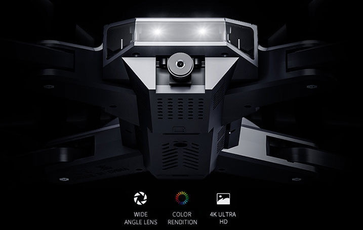
Акумулятор і час польоту
Скромний літієвий акумулятор має ємність в 1800 мАг при робочій напрузі 3,7 В. За заявкою виробника час
польоту має варіювати в межах 18-20 хвилин. На ділі цей показник виявився максимально реалістичним. 15
хвилин
польоту на оптимальних режимах вам точно гарантовані.
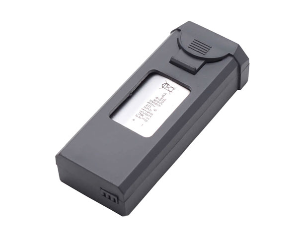
Для зарядки батареї в комплекті передбачений оригінальний кабель. На самому акумуляторі не знайдете ніяких
світлових діодів для визначення рівня заряду. Але на кабелі є червоний індикатор, як тільки він перестане
світиться процес зарядки завершений - батарея заряджена на сто відсотків.
Пульт
Якщо ви захоплювалися відеоіграми, то пульт вам точно буде знайомий, так як він виконаний у вигляді ігрового
геймпада. Для управління дроном передбачені два стіки і набір кнопок.
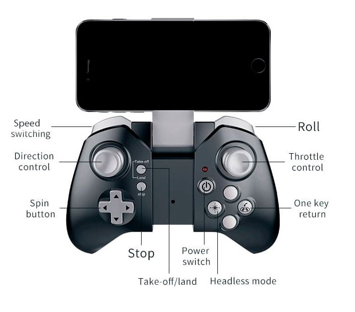
Тримач для смартфона досить надійно фіксує мобільний пристрій. На торці, як уже говорилося, розташовані дві
кнопки, що відповідають за режим швидкості і фліпи.
Для живлення пульта необхідні чотири пальчикові батарейка типу АА, які необхідно докупити окремо.
Як підсумок коротко про плюси і мінуси
Почнемо з мінусів, так як їх набагато менше. Це суб'єктивна думка і можете її оскаржити в коментарях до
цього
огляду. Наявність другої камери, розташованої знизу не несе особливого функціоналу, її якість недостатня для
зйомки. І, так як дальність польоту дрона невелика, тому пілоту завжди добре видно що знаходиться під
квадрокоптером, тому наявність цієї камери не обгрунтована.
До другого недоліку можна віднести налаштування режимів польоту і зйомки, ці параметри необхідно кожен раз
перед польотом коригувати в додатку. Вони не зберігаються.
Тепер до плюсів:
-
ціна,
-
час польоту в межах 20 хвилин,
-
ремонтопридатність і доступна вартість комплектуючих,
-
гарна якість основної камери,
-
просте налаштування і керування,
-
режим для новачків,
-
жести для зйомки фото і відео,
-
функціональність.
В цілому модель досить цікава і якісна. У польоті поводиться слухняно, відео транслюється на екран
підключеного смартфона і зберігається в його пам'яті, як і фото. Для початківця пілота це один з найбільш
влучних варіантів. Саме тому, повертаючись до першого питання про популярність дрона можна сміливо
відповісти
- квадрокоптер Visuo XS816 популярний завдяки відмінному співвідношенню ціни і якості.
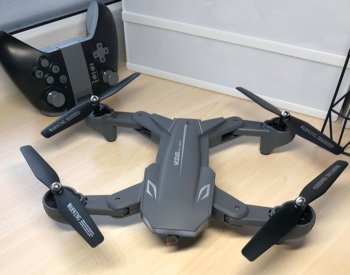
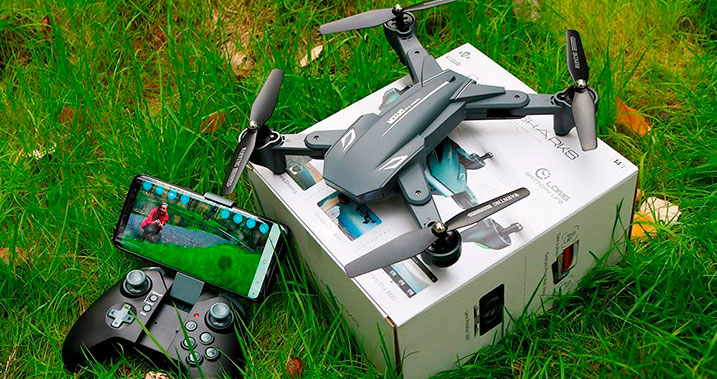
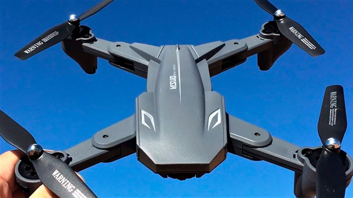
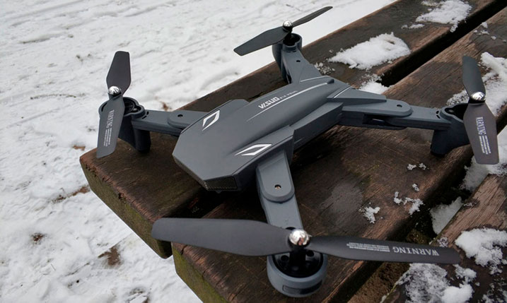